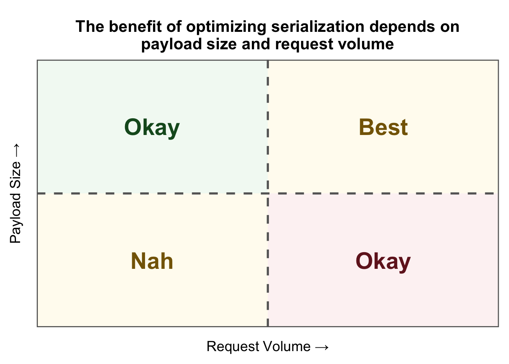

library(plumber2)
library(yyjsonr)
library(nanoparquet)Introduction
This is the first in a series of posts about improving the performance of REST APIs using the {plumber2} R package. API performance is a complex topic that can’t be covered in one go, so we’re going to break things up into the following topics.
- Serialization
- Async execution
- Caching
- Long-running jobs
- Rate limiting
First up is serialization, so let’s get to it.
Prerequisites
We’ll use the following packages in this post.
What is serialization, and why does it matter?
Serialization and deserialization are about converting your R objects into a format transmittable over the web and vice versa. When a Plumber API receives a request, it needs to parse that request into an R object (deserialization); when the API issues a response, it needs to transform the R object it’s returning into a format like JSON (serialization).
Object serialization usually won’t be your first priority when it comes to optimizing performance. When your API has minimal to moderate traffic and small response payloads, serialization won’t make much of a difference because Plumber’s built-in serializers are already sufficient for those scenarios. For example, suppose your API returns data that is queried by a data pipeline that runs hourly. If you tuned your API so that it can process the same sized dataset in 100 milliseconds instead of 10 seconds, the data pipeline won’t be any better for it because it still runs hourly. When traffic is high and payloads are large, however, the costs of serialization can add up quickly; in these scenarios, minimizing the serialization cost can be beneficial. The following table can help determine if focusing on serialization is right for you.

How to optimize parsers/serializers in {plumber2}
Let’s suppose we’re in a position where we would benefit from minimizing serialization costs. How can we do that? Turns out {plumber2} makes this pretty straightforward. Consider the code below. There are three things we need to do to modify the serialization behavior of our API.
1yyjsonr_serializer <- function(...) {
function(x) {
yyjsonr::write_json_str(x)
}
}
2plumber2::register_serializer("yyjsonr", yyjsonr_serializer, "application/json")
#* Return a dataset using an optimized JSON serializer
#*
#* @get /optimized-payload
3#* @serializer yyjsonr
#*
function() {
palmerpenguins::penguins
}
#* Return a dataset using the default JSON serializer
#*
#* @get /default-payload
#* @serializer json
#*
function() {
palmerpenguins::penguins
}- 1
- Define a factory function that invokes our optimized serialization function.
- 2
- Register that serializer so our API’s aware of it.
- 3
- Specify our new serializer on relevant endpoints.
And that’s all there is to it. With just a little upfront effort, all our endpoints returning JSON get a performance boost with zero code changes. It’s a pretty good deal.
How much of a difference could this make?
In the example above, we used a package called {yyjsonr} to serialize objects to JSON. This package uses a C library called yyjson that’s focused on high performance JSON parsing/serialization. Based on benchmarks, this package is usually 2x the speed of {jsonlite}, the default package used by {plumber2} for handling JSON. (see here for details.) The takeaway? Over the same span of time, you could process twice as many requests using the new serializer as you could using the default serializer. In high traffic scenarios, this could make a huge difference in alleviating pressure on your web service during periods of intense traffic.
Pushing things a little further with compression
Sometimes transferring JSON isn’t just a matter of how fast you can make it; the way you package it matters, too. JSON, like CSVs, are basically organized blobs of text, and text data can be expensive to send across the network. If we’re exchanging large datasets as JSON, we can benefit from modifying the payload so it contains all the same information but with a smaller memory footprint. This is where compression comes into play. Consider the code below.
yyjsonr_serializer <- function(...) {
function(x) {
yyjsonr::write_json_str(x)
}
}
yyjsonr_compressed_serializer <- function(...) {
function(x) {
json <- yyjsonr::write_json_str(x)
1 out <- base::memCompress(json, type = "gzip")
out
}
}
plumber2::register_serializer("yyjsonr", yyjsonr_serializer, "application/json")
plumber2::register_serializer(
"yyjsonr_compressed",
yyjsonr_compressed_serializer,
"application/json"
)
#* Return a dataset using an optimized JSON serializer
#*
#* @get /optimized-payload
#* @serializer yyjsonr
#*
function() {
palmerpenguins::penguins
}
#* Return a dataset as compressed JSON.
#*
#* @get /compressed-payload
#* @serializer yyjsonr_compressed
#*
function(response) {
2 response$append_header("Content-Encoding", "gzip")
palmerpenguins::penguins
}
#* Return a dataset using the default JSON serializer
#*
#* @get /default-payload
#* @serializer json
#*
function() {
palmerpenguins::penguins
}- 1
- Compress the JSON using the ‘gzip’ compression algorithm.
- 2
- Tell the client what compression algorithm is used so it can decompress it automatically if it knows how to.
We’ve added a new endpoint called /compressed-payload that uses a new serializer that returns compressed JSON using the gzip compression algorithm. Note there are plenty of algorithms to choose from, like xz, brotli, zstd, but I chose gzip because most clients understand it. When we say the data is compressed, how much are we talking here? To put things in perspective, suppose we’re returning a random sample of 100K records from the penguins dataset from {palmerpenguins}. The size of the payload uncompressed is 15.16MB, but the size of the compressed payload is only 743.02kB; the compressed version is about 20X smaller than the original, making it much easier to send across networks of any latency. So why doesn’t every API return compressed JSON? Compression isn’t always beneficial; in fact, compression can sometimes lead to slower endpoints. Compression isn’t free, it adds computational overhead to your endpoints. Compression benefits us when the savings we make elsewhere outweigh the added costs of using it. The key considerations when thinking about this are network latency and payload size. The sweet spot is sending large payloads (think 100K+ records) over high-latency networks. Be sure to vet your endpoints using load tests to determine if compression is helping or hurting you.
Topics for further review
We’ve focused on JSON in this post because it’s the most popular format used to exchange data between web services. With that said, JSON isn’t the only game in town. Another option is to send data in the parquet format. Again, JSON is text, and text is expensive to process. Parquet is a binary format designed from the ground up for columnar datasets like data frames. It’s also very memory efficient. The table below shows file sizes for random samples of the penguins dataset written to JSON and parquet.
| n | json | compressed_json | parquet |
|---|---|---|---|
| 1K | 146.79K | 23.75K | 7.88K |
| 10K | 1.43M | 214.75K | 47.7K |
| 100K | 14.33M | 2.08M | 442.38K |
| 1M | 143.29M | 20.77M | 4.28M |
Even after compressing the JSON files, the parquet files are still way smaller. Generating parquet formatted data is also very fast thanks to packages like {nanoparquet} and {arrow}. The following table shows median execution times for generating JSON files versus parquet files using the same datasets used in the previous table. To keep things competitive, we’ll generate the JSON with {yyjsonr} and the parquet with {nanoparquet}. As the number of records increases, it’s clear that generating parquet is much faster.
| n | json | parquet |
|---|---|---|
| 1K | 847.59µs | 1.92ms |
| 10K | 4.83ms | 4ms |
| 100K | 46.32ms | 21.57ms |
| 1M | 491.23ms | 189.42ms |
Parquet presents a new opportunity for data-intensive APIs that need to pass around larger datasets. Parquet is very cool, but before replacing all of your JSON payloads with parquet, keep the following in mind. One is that parquet isn’t human readable like JSON, so it won’t be much help when combing through debug logs. Second is that just because your API can send something in parquet doesn’t mean the rest of your software ecosystem can. Teams may not want to add new dependencies or make code changes needed to support parquet, and if you want to make your work valuable to the greater organization, sometimes the best thing to do is do what everyone else is doing.
Conclusion
We did it! Next up is async execution.
R Session Info
sessioninfo::session_info()─ Session info ───────────────────────────────────────────────────────────────
setting value
version R version 4.3.3 (2024-02-29)
os macOS Ventura 13.6
system aarch64, darwin20
ui X11
language (EN)
collate en_US.UTF-8
ctype en_US.UTF-8
tz America/New_York
date 2025-11-09
pandoc 3.6.3 @ /Applications/Positron.app/Contents/Resources/app/quarto/bin/tools/aarch64/ (via rmarkdown)
─ Packages ───────────────────────────────────────────────────────────────────
package * version date (UTC) lib source
cli 3.6.5 2025-04-23 [1] CRAN (R 4.3.3)
digest 0.6.37 2024-08-19 [1] CRAN (R 4.3.3)
dplyr 1.1.4 2023-11-17 [1] CRAN (R 4.3.1)
evaluate 1.0.3 2025-01-10 [1] CRAN (R 4.3.3)
farver 2.1.2 2024-05-13 [1] CRAN (R 4.3.3)
fastmap 1.2.0 2024-05-15 [1] CRAN (R 4.3.3)
generics 0.1.4 2025-05-09 [1] CRAN (R 4.3.3)
ggplot2 * 3.5.2 2025-04-09 [1] CRAN (R 4.3.3)
glue 1.8.0 2024-09-30 [1] CRAN (R 4.3.3)
gtable 0.3.6 2024-10-25 [1] CRAN (R 4.3.3)
htmltools 0.5.8.1 2024-04-04 [1] CRAN (R 4.3.3)
htmlwidgets 1.6.4 2023-12-06 [1] CRAN (R 4.3.1)
jsonlite 2.0.0 2025-03-27 [1] CRAN (R 4.3.3)
knitr 1.50 2025-03-16 [1] CRAN (R 4.3.3)
labeling 0.4.3 2023-08-29 [1] CRAN (R 4.3.3)
lifecycle 1.0.4 2023-11-07 [1] CRAN (R 4.3.3)
magrittr 2.0.3 2022-03-30 [1] CRAN (R 4.3.3)
pillar 1.11.0 2025-07-04 [1] CRAN (R 4.3.3)
pkgconfig 2.0.3 2019-09-22 [1] CRAN (R 4.3.3)
R6 2.6.1 2025-02-15 [1] CRAN (R 4.3.3)
RColorBrewer 1.1-3 2022-04-03 [1] CRAN (R 4.3.3)
rlang 1.1.6 2025-04-11 [1] CRAN (R 4.3.3)
rmarkdown 2.29 2024-11-04 [1] CRAN (R 4.3.3)
scales 1.4.0 2025-04-24 [1] CRAN (R 4.3.3)
sessioninfo 1.2.2 2021-12-06 [2] CRAN (R 4.3.0)
tibble 3.3.0 2025-06-08 [1] CRAN (R 4.3.3)
tidyselect 1.2.1 2024-03-11 [1] CRAN (R 4.3.1)
vctrs 0.6.5 2023-12-01 [1] CRAN (R 4.3.3)
withr 3.0.2 2024-10-28 [1] CRAN (R 4.3.3)
xfun 0.52 2025-04-02 [1] CRAN (R 4.3.3)
yaml 2.3.10 2024-07-26 [1] CRAN (R 4.3.3)
[1] /Users/joe/Library/R/arm64/4.3/library
[2] /Library/Frameworks/R.framework/Versions/4.3-arm64/Resources/library
──────────────────────────────────────────────────────────────────────────────